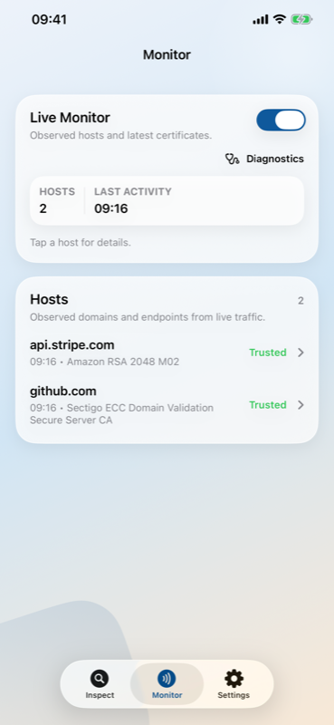
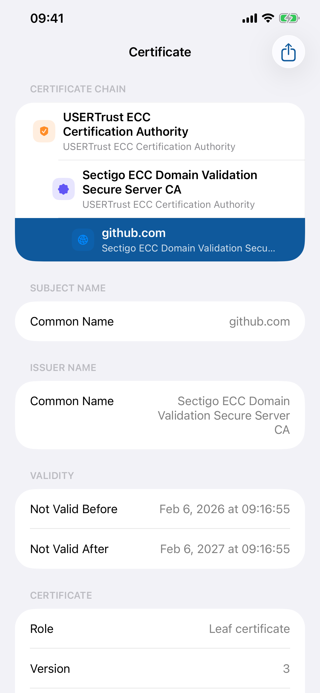

TLS certificate inspector with passive Live Monitor for iPhone, iPad, and Mac.
Download on the App Store


Certificates are captured from live handshakes and shown in a scrollable feed. Nothing is intercepted or modified.